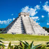

| Rank | Wonder | Location | Date Completed | Purpose | Fun Fact |
|---|---|---|---|---|---|
| 1 | Chichen Itza  |
Yucatán State, Mexico | 400 A.D | Temple used to give offerings to the gods. | Main temple is called the Temple of Kukulcan. |
| 2 | The Colosseum |
Rome, Italy | 72-80 A.D. | This amphitheater served as a viewing space for gladiator fights and other public events. | Earthquakes and thieves ravaged the Colosseum, yet it still stands today. |
| 3 | Christ the Redeemer Statue |
Rio de Janeiro, Brazil | 1922-1931 | This statue stands as a show of faith and is a big part of Rio and Brazil. | The statue stands 98 feet tall and has an armspan of 92 feet. |
| 4 | Great Wall |
China | 7-3 B.C | The Great Wall served as a fortress with the protective benefit of keeping out unwanted people. | The Great Wall stretches a total of 13,171 miles. |
| 5 | Machu Picchu |
Cuzco Region, Peru | 1450-1460 | Resembles an abandoned city that supposedly housed an Incan Emperor. | One unique feature is the carved ritual stone bed referred to as "The Hitching Post of the Sun". |
| 6 | Petra |
Ma'an, Jordan | 4 B.C. | Served as a Nabataean Kingdom capital building where many trade routes came to meet. | They were able to create an artificial oasis through the use of a water conduit system. |
| 7 | Taj Mahal |
Uttar Pradesh, India | 1653 | This immense structure served as a burial site for Shah Jahan and his favorite wife. | The structure is made up of ivory-white marble and reaches 240ft. |